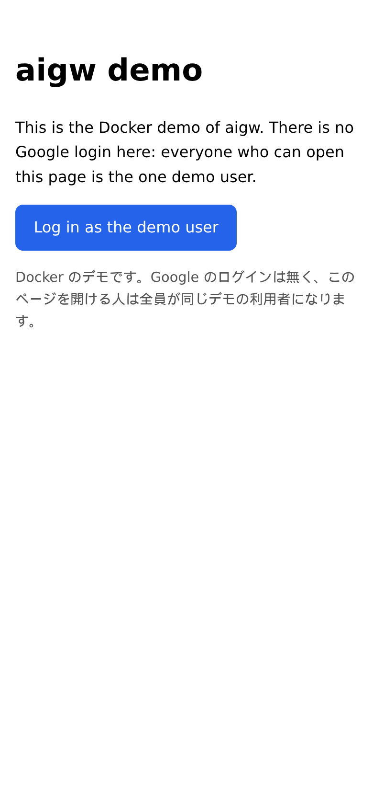
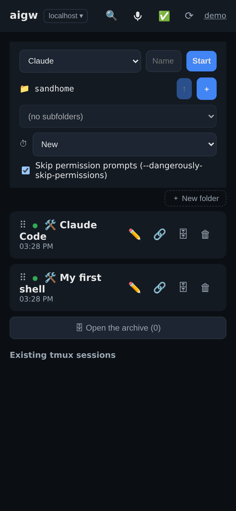
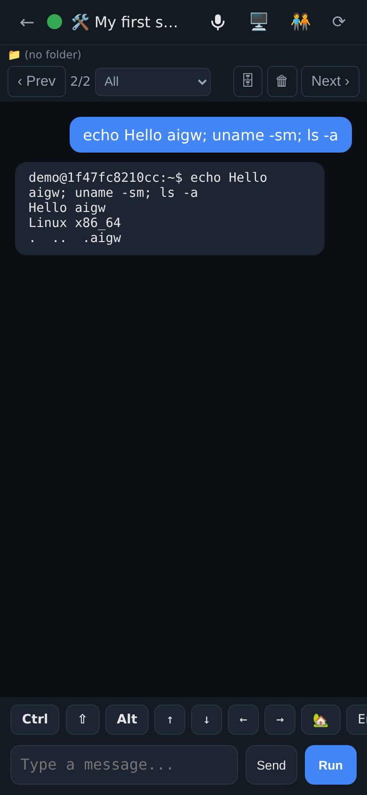
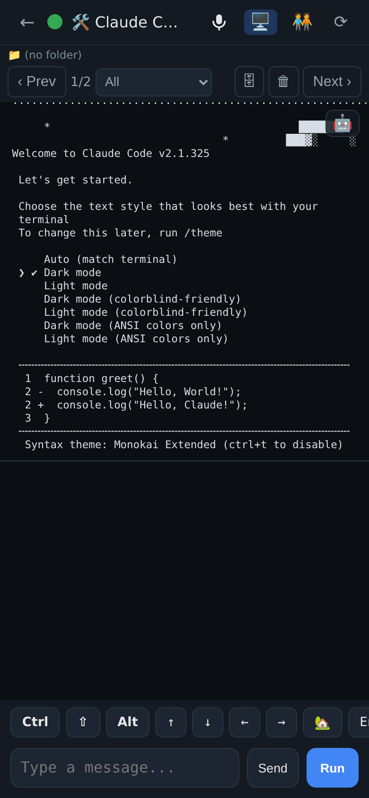

How to run aigw in a single Docker container on your own PC (or a server you control) and try it out. No administrator needed: in about 15 minutes you can use shell and Claude Code sessions from your browser.
The Basics and Advanced parts describe a production server set up by an administrator (Google login, one container per user). This demo is a stand-in setup for running aigw for one person locally, and some features are not available (chapter 8).
docker run hello-world works, you are set.git clone https://github.com/haselab-net/aigw.git
cd aigw
docker build -f docker/Dockerfile -t aigw-demo .This takes a few minutes (Debian, Python, tmux and the native build of Claude Code). Without Claude Code, docker build --build-arg WITH_CLAUDE=0 -f docker/Dockerfile -t aigw-demo . is smaller and faster.
docker run -d --name aigw-demo -p 127.0.0.1:8878:8878 -v aigw-demo-home:/home/demo aigw-demo| Option | Meaning |
|---|---|
-d --name aigw-demo | Run in the background, named aigw-demo |
-p 127.0.0.1:8878:8878 | Reachable on port 8878 from this PC only. Keep the 127.0.0.1: (without it, anyone on the same network can get into the demo) |
-v aigw-demo-home:/home/demo | Keep the demo user's home (your files, the Claude Code login) in a Docker volume, so it survives recreating the container |
If port 8878 is taken, change the left number, e.g. -p 127.0.0.1:18878:8878, and use that number in the URLs below.
ssh -L 8878:127.0.0.1:8878 <server> and open it in your local browser.
http://localhost:8878/agents/ in your browser.demo) and gets a shell inside the container. Do not let untrusted people use it, and do not keep untrusted pages open in the browser you logged into the demo with.The login only works when opened as localhost or 127.0.0.1. To open it under another name, add -e AIGW_DEMO_HOSTS=name to docker run.
Safari does not accept the login cookie over plain-http localhost, so after logging in you would land back on this page. Use Chrome, Edge or Firefox.

In the list, ✏️ renames, 🔗 connects it with another session (linking; see Advanced), 🗄 archives and 🗑 deletes. A session keeps running in the container until you stop it, so you can close the browser and pick it up later.

The shell runs inside the container as demo, with /home/demo/sandhome as its home (standing in for the per-user container of a production server).

sandhome).sandhome.The login is stored under /home/demo, so with -v aigw-demo-home:/home/demo it survives recreating the container.
With “Skip permission prompts” ticked, Claude Code runs commands without asking each time. It only acts inside the container; untick it to be asked every time.
Chapters 2, 3, 5 and 6 of Basics (the screens, key input, the chat and the terminal screen) apply as they are.
| To | Command |
|---|---|
| Stop / start again | docker stop aigw-demo / docker start aigw-demo |
| Update to a new version | git pull, then chapter 2's docker build, docker rm -f aigw-demo, and chapter 3's docker run |
| Remove the container (keep the data) | docker rm -f aigw-demo |
| Remove the data too | The above, plus docker volume rm aigw-demo-home |
| Get a shell in the container | docker exec -it -u demo aigw-demo bash |
Your files are in /home/demo/sandhome (inside the aigw-demo-home volume). The session list and history are under /home/demo too, so keeping the volume lets you continue where you left off. Recreating the container logs you out; press “Log in as the demo user” again.
| Feature | In the demo |
|---|---|
| Google login, several users, self sign-up | None. There is one user, demo |
| “Shell (outside sandbox, host)”, the root shell, passkeys | Not available (the passkey unlock is not installed). Buttons may show but fail |
| Codex | Not in the image |
| Other machines over ssh, the Windows machines board | Not shown (not configured) |
| Phone notifications (Web Push) | Not sent (no keys) |
| Sharing | No other user to share with, so effectively unavailable |
| Separation into per-user containers | None. Sessions and the backend run in the same container |
The differences from a production setup are summarized in docker/README.md.
README.md.